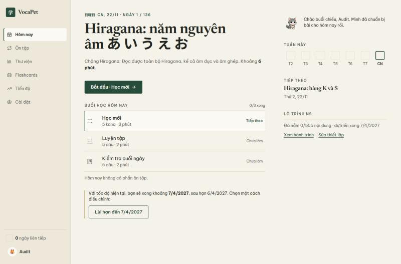

<title>VocaPet Studio Redesign</title>
<meta name="claude:viewport-fit-sides" content="cover">
<link rel="preconnect" href="https://fonts.googleapis.com">
<link rel="stylesheet" href="https://fonts.googleapis.com/css2?family=Be+Vietnam+Pro:wght@400;500;600&family=Playfair+Display:wght@500;600;700&family=Shippori+Mincho:wght@600;800&family=Noto+Sans+JP:wght@400;500&display=swap">
<style>
/* Layout: 760px argument column widening to 1120px for wireframes; the page is set in the v3 "Studio Playground" palette. */
:root{
  --ivory:#F5F2E9;--paper:#FBF9F3;--paper-2:#ECE7DA;--ink:#252922;--ink-2:#6E7066;--gray:#85877D;
  --forest:#285C47;--on-forest:#FFFFFF;--sage:#A8B5A0;--sage-soft:#DFE5D8;--butter:#E9D49B;--terra:#C98568;--terra-ink:#9A4F33;--rule:#DAD3C2;
  --f-ui:"Be Vietnam Pro",system-ui,sans-serif;--f-head:"Playfair Display",Georgia,serif;
  --f-jp:"Shippori Mincho","Hiragino Mincho ProN","Yu Mincho",serif;--f-jps:"Noto Sans JP","Hiragino Sans",sans-serif;
}
@media (prefers-color-scheme:dark){:root:not([data-theme="light"]){
  --ivory:#181B17;--paper:#20241F;--paper-2:#272C25;--ink:#EDEAE0;--ink-2:#AAAD9F;--gray:#8E9185;--forest:#93C2A9;--on-forest:#10201A;--sage:#5F7059;--sage-soft:#2A3428;--butter:#6E5F33;--terra:#D99A7E;--terra-ink:#E2A68B;--rule:#3A4037;color-scheme:dark}}
:root[data-theme="dark"]{
  --ivory:#181B17;--paper:#20241F;--paper-2:#272C25;--ink:#EDEAE0;--ink-2:#AAAD9F;--gray:#8E9185;--forest:#93C2A9;--on-forest:#10201A;--sage:#5F7059;--sage-soft:#2A3428;--butter:#6E5F33;--terra:#D99A7E;--terra-ink:#E2A68B;--rule:#3A4037;color-scheme:dark}
*{box-sizing:border-box}
body{background:var(--ivory);color:var(--ink);font:16px/1.6 var(--f-ui);padding-left:max(16px,env(safe-area-inset-left,0px));padding-right:max(16px,env(safe-area-inset-right,0px));padding-block:0 72px}
main{max-width:1120px;margin:0 auto}
.col{max-width:760px}
h1,h2,h3{font-family:var(--f-head);font-weight:600;text-wrap:balance;margin:0;letter-spacing:-.01em}
h1{font-size:clamp(2.3rem,5.5vw,3.8rem);line-height:1.04}
h2{font-size:2rem;line-height:1.12;margin-bottom:12px}
h3{font-size:1.3rem;line-height:1.25}
p{margin:0}
.kick{font-size:12px;font-weight:600;letter-spacing:.14em;text-transform:uppercase;color:var(--forest)}
.kick.m{color:var(--ink-2)}
.muted{color:var(--ink-2)}
.jp{font-family:var(--f-jp);font-weight:800;letter-spacing:0}
[lang=ja]{letter-spacing:0}
mark{background:linear-gradient(transparent 58%,var(--butter) 58%);color:inherit;padding:0 .08em}
section{padding-block:56px;border-top:1px solid var(--rule)}
header.top{padding-block:56px 40px;display:grid;gap:18px}
.stack{display:grid;gap:12px}
.two{display:grid;grid-template-columns:repeat(auto-fit,minmax(min(100%,320px),1fr));gap:32px}
table{border-collapse:collapse;width:100%;font-size:14px}
th,td{text-align:left;padding:10px 12px 10px 0;border-bottom:1px solid var(--rule);vertical-align:top}
th{font-size:12px;letter-spacing:.1em;text-transform:uppercase;color:var(--ink-2);font-weight:600}
.scroll{overflow-x:auto}
code{font-family:ui-monospace,Consolas,monospace;font-size:.88em}
ul.plain{margin:0;padding-left:18px}ul.plain li{margin-bottom:6px}
.sw{display:grid;grid-template-columns:repeat(auto-fit,minmax(min(100%,170px),1fr));border-top:1px solid var(--rule);margin-top:20px}
.sw div{padding:12px 12px 14px 0;border-bottom:1px solid var(--rule);display:grid;grid-template-columns:36px 1fr;gap:10px}
.sw i{width:36px;height:36px;border-radius:4px;border:1px solid var(--rule)}
.sw b{display:block;font-size:14px}.sw small{font-size:12px;color:var(--ink-2);font-variant-numeric:tabular-nums}
.type-row{display:grid;grid-template-columns:160px 1fr;gap:16px;align-items:baseline;padding:14px 0;border-bottom:1px solid var(--rule)}
.type-row small{font-size:12px;color:var(--ink-2)}
@media (max-width:560px){.type-row{grid-template-columns:1fr;gap:4px}}
.shots{display:grid;grid-template-columns:repeat(auto-fit,minmax(min(100%,300px),1fr));gap:16px;margin-top:20px}
.shots img{display:block;width:100%;height:auto;border:1px solid var(--rule);border-radius:4px}
/* wireframes */
.wf{margin-top:28px;border:1px solid var(--rule);border-radius:8px;background:var(--ivory);overflow:hidden}
.wf-bar{padding:8px 12px;border-bottom:1px solid var(--rule);font-size:12px;color:var(--ink-2);background:var(--paper-2)}
.wf-body{display:grid;grid-template-columns:176px 1fr;min-height:380px}
.side{background:var(--paper-2);border-right:1px solid var(--rule);padding:16px 10px;display:grid;align-content:start;gap:2px;font-size:13px}
.side .logo{font-family:var(--f-head);font-weight:700;font-size:1.15rem;padding:0 8px 14px}
.side span{padding:7px 8px;border-radius:4px;color:var(--ink-2)}
.side span.on{background:var(--paper);color:var(--ink);font-weight:600;box-shadow:inset 2px 0 0 var(--forest)}
.pg{padding:24px 28px;min-width:0}
.g{display:grid;grid-template-columns:7fr 4fr;gap:32px}
.btn{display:inline-flex;align-items:center;gap:8px;min-height:44px;padding:0 18px;border-radius:4px;background:var(--forest);color:var(--on-forest);font-weight:600;font-size:14px;border:1px solid var(--forest)}
.btn.q{background:transparent;color:var(--forest)}
.rows{border-top:1px solid var(--rule)}
.row{display:grid;grid-template-columns:34px 1fr auto;gap:12px;align-items:center;padding:11px 6px;border-bottom:1px solid var(--rule);font-size:14px}
.row .k{font-family:var(--f-jp);font-weight:800;font-size:1.15rem;color:var(--ink-2)}
.row.now{background:var(--paper);box-shadow:inset 2px 0 0 var(--forest)}.row.now .k{color:var(--forest)}
.seal{display:inline-grid;place-items:center;width:var(--s,30px);height:var(--s,30px);border:2px solid var(--terra);color:var(--terra-ink);border-radius:4px;font-family:var(--f-jp);font-weight:800;font-size:calc(var(--s,30px)*.44);transform:rotate(-4deg)}
.seal.fill{background:var(--terra);color:var(--ink)}
.seal.e{border:1px dashed var(--rule);transform:none}
.week{display:grid;grid-template-columns:repeat(7,1fr);gap:6px;text-align:center;font-size:11px;color:var(--ink-2)}
.week div{display:grid;gap:5px;justify-items:center}
.pet{display:flex;gap:12px;align-items:flex-start;font-size:14px}
.sprite{flex:none;width:52px;height:52px;border:1px dashed var(--sage);border-radius:4px;display:grid;place-items:center;font-size:9px;color:var(--ink-2);text-align:center;line-height:1.15}
.bubble{background:var(--paper);border:1px solid var(--rule);border-radius:8px 8px 8px 2px;padding:10px 12px}
.ann{font-size:12px;color:var(--terra-ink);font-weight:600}
.bar{height:4px;background:var(--paper-2);border-radius:2px;overflow:hidden}.bar i{display:block;height:100%;background:var(--forest)}
.chips{display:flex;gap:6px;flex-wrap:wrap}
.chip{font-size:12px;padding:6px 10px;border:1px solid var(--rule);border-radius:4px;background:var(--paper)}
.chip.on{background:var(--forest);color:var(--on-forest);border-color:var(--forest)}
.search{display:flex;align-items:center;gap:8px;min-height:44px;padding:0 14px;border:1px solid var(--rule);border-radius:4px;background:var(--paper);color:var(--ink-2);font-size:14px}
.card{border:1px solid var(--rule);border-radius:8px;background:var(--paper);padding:28px;text-align:center;display:grid;gap:10px;justify-items:center}
.rate{display:grid;grid-template-columns:repeat(4,1fr);gap:8px}
.rate span{border:1px solid var(--rule);border-radius:4px;padding:10px 4px;text-align:center;font-size:13px;background:var(--paper)}
.rate span.g{background:var(--forest);color:var(--on-forest);border-color:var(--forest)}
.form{display:grid;gap:0;border-top:1px solid var(--rule)}
.f{display:grid;grid-template-columns:200px 1fr;gap:16px;padding:14px 0;border-bottom:1px solid var(--rule);font-size:14px;align-items:center}
.seg{display:inline-flex;border:1px solid var(--rule);border-radius:4px;overflow:hidden}
.seg span{padding:7px 12px;font-size:13px;border-right:1px solid var(--rule)}.seg span:last-child{border:0}
.seg span.on{background:var(--forest);color:var(--on-forest)}
.genko{display:grid;grid-template-columns:repeat(var(--c,5),minmax(0,1fr));border-left:1px solid var(--rule);border-top:1px solid var(--rule);max-width:var(--w,240px)}
.genko span{aspect-ratio:1;display:grid;place-items:center;border-right:1px solid var(--rule);border-bottom:1px solid var(--rule);font-family:var(--f-jp);font-weight:600;font-size:var(--fs,1rem);color:var(--ink-2);background:var(--paper)}
.genko span.m{background:var(--forest);color:var(--on-forest)}.genko span.l{box-shadow:inset 0 0 0 2px var(--sage);color:var(--ink)}
.moods{display:grid;grid-template-columns:repeat(auto-fit,minmax(min(100%,200px),1fr));gap:0;border-top:1px solid var(--rule)}
.moods div{padding:12px 12px 12px 0;border-bottom:1px solid var(--rule);font-size:14px}
.moods b{display:block}
@media (max-width:820px){.wf-body{grid-template-columns:1fr}.side{display:none}.g{grid-template-columns:1fr}.pg{padding:20px 16px}.f{grid-template-columns:1fr;gap:6px}}
</style>

<main>
<header class="top col">
  <p class="kick">VocaPet · Proposal v3 · Japanese Studio Playground · 22/11/2026</p>
  <h1>Hồn biên tập, trái tim <mark>vui tươi</mark>, học có chủ đích</h1>
  <p class="muted">Đề xuất cho brief mới. Nền móng từ đợt trước (token chung, khung phẳng, focus mode, genkō, hanko) được giữ lại. Đợt này đổi bảng màu và font tiêu đề theo brief, thêm lớp "playful" (highlight bơ, thú cưng có cảm xúc theo ngữ cảnh), và làm lại hai màn chưa đụng tới: <b>Flashcards</b> và <b>Cài đặt</b>. Chưa sửa code cho đợt này.</p>
</header>

<section>
  <div class="col stack">
    <p class="kick">1 · Audit</p>
    <h2>Sáu màn trong brief, đối chiếu với code thật</h2>
  </div>
  <div class="scroll" style="margin-top:16px">
  <table>
    <thead><tr><th>Màn</th><th>Route</th><th>Hiện trạng</th><th>Việc đợt này</th></tr></thead>
    <tbody>
      <tr><td>Today</td><td><code>/app</code></td><td>Đã làm đợt trước</td><td>Đổi palette, thêm highlight, mood thú cưng, gộp ôn tập đến hạn vào kế hoạch ngày</td></tr>
      <tr><td>Ôn tập</td><td><code>/app/review</code></td><td>Đã làm</td><td>Thêm nhóm Từ vựng / Kanji / Kana / Ngữ pháp (từ <code>dueByType</code>), trạng thái SRS, khuyến nghị</td></tr>
      <tr><td>Thư viện</td><td><code>/app/library</code></td><td>Mục lục 目次, chưa có tìm kiếm</td><td>Thêm tìm kiếm thật (API <code>tango/search</code> + lọc dữ liệu ngữ pháp, kanji có sẵn) và chip lọc nhóm</td></tr>
      <tr><td>Flashcards</td><td><code>/app/decks</code>, <code>/app/decks/$deckId</code></td><td>Chỉ ăn token. Tiếng Anh, thẻ bo tròn, 5 chế độ (browse, srs, flashcards, quiz, type)</td><td>Làm lại danh sách bộ thẻ và màn học: thẻ có ruby, nghĩa, ví dụ; hoàn thành có dấu + thú cưng</td></tr>
      <tr><td>Tiến độ</td><td><code>/app/progress</code></td><td>Đã làm</td><td>Thêm lịch sử học (bài đã xong), mastery kanji nếu có dữ liệu, palette mới</td></tr>
      <tr><td>Cài đặt</td><td><code>/app/profile</code></td><td>Chỉ ăn token. Tiếng Anh, thẻ lồng thẻ, độ chính xác lấy từ store cục bộ, còn <code>console.log</code></td><td>Làm lại thành trang cài đặt có nhóm</td></tr>
    </tbody>
  </table>
  </div>
  <div class="two" style="margin-top:32px">
    <div class="stack">
      <h3>Giữ nguyên</h3>
      <ul class="plain muted">
        <li>Toàn bộ API, query hook, store, routing, đăng nhập, logic SRS/FSRS và chấm điểm.</li>
        <li>Roadmap và Lesson: chỉ đổi palette, không đổi bố cục.</li>
        <li>Các chế độ học của bộ thẻ: logic giữ nguyên, chỉ đổi giao diện.</li>
        <li>Sprite thú cưng có sẵn, component <code>Pet</code> với 6 mood: happy, excited, sad, sleepy, waiting, crying.</li>
      </ul>
    </div>
    <div class="stack">
      <h3>Thiếu dữ liệu, sẽ không bịa</h3>
      <ul class="plain muted">
        <li><b>Thông báo:</b> backend không có API cài đặt thông báo nên không hiện mục này.</li>
        <li><b>Đổi tên:</b> chỉ có API đổi avatar; tên và email hiện dạng chỉ đọc.</li>
        <li><b>Mục tiêu từ/ngày</b> và <b>độ chính xác</b> ở Hồ sơ đang lưu cục bộ trên trình duyệt: mục tiêu giữ lại kèm nhãn "trên thiết bị này", độ chính xác cục bộ bị bỏ.</li>
        <li><b>Mastery kanji:</b> chưa có endpoint tiến độ kanji riêng; chỉ hiện khi lộ trình có dữ liệu kanji.</li>
      </ul>
    </div>
  </div>
  <div class="shots">
    
  </div>
</section>

<section>
  <div class="col stack">
    <p class="kick">2 · Design system v3</p>
    <h2>Bảng màu của brief, đã chỉnh để đủ tương phản</h2>
    <p class="muted">Hai màu trong brief không đủ tương phản cho chữ nhỏ trên nền ivory: Warm Gray (3.3 : 1) và Terracotta (2.7 : 1). Đề xuất giữ đúng hai màu đó cho mảng và chữ lớn, thêm hai biến thể đậm hơn để làm chữ.</p>
  </div>
  <div class="sw">
    <div><i style="background:#F5F2E9"></i><span><b>Warm Ivory</b><small>#F5F2E9 · nền</small></span></div>
    <div><i style="background:#FBF9F3"></i><span><b>Soft Paper</b><small>#FBF9F3 · mặt nội dung</small></span></div>
    <div><i style="background:#285C47"></i><span><b>Forest</b><small>#285C47 · 6.9 : 1, chữ trắng 7.7</small></span></div>
    <div><i style="background:#252922"></i><span><b>Deep Ink</b><small>#252922 · 13.2 : 1</small></span></div>
    <div><i style="background:#A8B5A0"></i><span><b>Muted Sage</b><small>#A8B5A0 · chỉ tô mảng</small></span></div>
    <div><i style="background:#E9D49B"></i><span><b>Butter</b><small>#E9D49B · highlight, chữ ink 10.1</small></span></div>
    <div><i style="background:#C98568"></i><span><b>Terracotta</b><small>#C98568 · dấu hanko, mảng</small></span></div>
    <div><i style="background:#9A4F33"></i><span><b>Terracotta ink</b><small>#9A4F33 · chữ lỗi, 5.3 : 1</small></span></div>
    <div><i style="background:#85877D"></i><span><b>Warm Gray</b><small>#85877D · chữ ≥ 18px, disabled</small></span></div>
    <div><i style="background:#6E7066"></i><span><b>Warm Gray ink</b><small>#6E7066 · chữ phụ, 4.5 : 1</small></span></div>
  </div>
  <div style="margin-top:32px">
    <div class="type-row"><small>Tiêu đề biên tập<br>Playfair Display 600</small><span style="font-family:var(--f-head);font-weight:600;font-size:2.4rem;line-height:1.05">Đọc được năm nguyên âm đầu tiên</span></div>
    <div class="type-row"><small>Tiếng Nhật trình bày<br>Shippori Mincho 800</small><span class="jp" lang="ja" style="font-size:2.6rem;line-height:1">学習帖 あいうえお</span></div>
    <div class="type-row"><small>UI, thân bài<br>Be Vietnam Pro</small><span>Hôm nay bạn học 5 chữ kana mới, khoảng 30 phút. <b>Bắt đầu học</b></span></div>
    <div class="type-row"><small>Nhãn metadata</small><span class="kick m">Ngày 2 / 136 · Chặng Hiragana</span></div>
  </div>
  <div class="two" style="margin-top:32px">
    <div class="stack">
      <h3>Lớp "playful", dùng có liều</h3>
      <ul class="plain muted">
        <li><mark>Highlight bơ</mark> dưới đúng một cụm trong tiêu đề Today (nội dung học chính), không nơi nào khác.</li>
        <li>Thú cưng có bong bóng thoại và mood theo ngữ cảnh (bảng bên cạnh).</li>
        <li>Hoàn thành ngày hoặc phiên thẻ: dấu hanko đóng xuống + thú cưng "excited" một lần. Không confetti.</li>
        <li>Tiêu đề Playfair lớn, lệch trái; cột phụ hẹp bên phải tạo bố cục bất đối xứng.</li>
      </ul>
    </div>
    <div class="stack">
      <h3>Thú cưng theo ngữ cảnh</h3>
      <div class="moods">
        <div><b>Today, ngày học</b><span class="muted">happy · chào theo giờ, nói việc hôm nay</span></div>
        <div><b>Today, ngày nghỉ / trống</b><span class="muted">sleepy · gợi ý ôn tuỳ chọn</span></div>
        <div><b>Xong ngày / phiên thẻ</b><span class="muted">excited · một lần, kèm dấu 済</span></div>
        <div><b>Lesson, trả lời sai</b><span class="muted">waiting · "Thử lại nhé", không sad/crying</span></div>
        <div><b>Ôn tập đã hết</b><span class="muted">happy · hẹn lần ôn tiếp</span></div>
        <div><b>Library, Progress, Cài đặt</b><span class="muted">không hiện (trừ khu Thú cưng)</span></div>
      </div>
    </div>
  </div>
</section>

<section>
  <div class="col">
    <p class="kick">3 · Wireframes</p>
    <h2>Sáu màn</h2>
    <p class="muted">Dữ liệu trong khung lấy từ tài khoản test; số ở trạng thái "đã có dữ liệu" chỉ để minh hoạ bố cục, bản thật đọc từ API. Chữ màu đất nung là chú thích thiết kế.</p>
  </div>

  <div class="wf"><div class="wf-bar">01 · Today · /app</div><div class="wf-body">
    <div class="side"><span class="logo">VocaPet</span><span class="on">Hôm nay</span><span>Ôn tập</span><span>Thư viện</span><span>Flashcards</span><span>Tiến độ</span><span>Cài đặt</span></div>
    <div class="pg g">
      <div class="stack" style="gap:16px">
        <p class="kick"><span lang="ja">日曜日</span> · CN 22/11 · Ngày 1 / 136</p>
        <h2 style="font-size:2.5rem;line-height:1.05">Hiragana: <mark>năm nguyên âm</mark> <span class="jp" lang="ja">あいうえお</span></h2>
        <p class="muted" style="font-size:14px">Vì sao: nguyên âm là nền của mọi hàng kana. Khoảng <b style="color:var(--ink)">6 phút</b>.</p>
        <p><span class="btn">Bắt đầu học mới →</span></p>
        <div class="rows">
          <div class="row now"><span class="k" lang="ja">二</span><span><b>Học mới</b><br><small class="muted">5 kana · 3 phút</small></span><small style="color:var(--forest);font-weight:600">Tiếp theo</small></div>
          <div class="row"><span class="k" lang="ja">三</span><span>Luyện tập<br><small class="muted">5 câu · 2 phút</small></span><small class="muted">Chưa làm</small></div>
          <div class="row"><span class="k" lang="ja">四</span><span>Kiểm tra cuối ngày<br><small class="muted">5 câu · 2 phút</small></span><small class="muted">Chưa làm</small></div>
          <div class="row"><span class="k" lang="ja">語</span><span>Ôn thẻ đến hạn<br><small class="muted">từ Ôn tập · 8 thẻ</small></span><small class="muted">Tuỳ chọn</small></div>
        </div>
        <p class="ann">Mới: ôn tập đến hạn (từ vựng + lộ trình) hiện như dòng cuối của kế hoạch ngày, có nút sang Ôn tập.</p>
      </div>
      <div class="stack" style="gap:22px;align-content:start">
        <div class="pet"><span class="sprite">mèo<br>happy</span><span class="bubble">Chào buổi chiều, Audit. Hôm nay chỉ năm chữ thôi.</span></div>
        <div class="stack" style="gap:8px"><p class="kick m">Tuần này</p><div class="week"><div><span class="seal e">・</span>T2</div><div><span class="seal e">・</span>T3</div><div><span class="seal e">・</span>T4</div><div><span class="seal e">・</span>T5</div><div><span class="seal">試</span>T6</div><div><span class="seal e">・</span>T7</div><div style="color:var(--ink);font-weight:600"><span class="seal e" style="border:2px solid var(--forest)">・</span>CN</div></div></div>
        <div class="stack" style="gap:4px"><p class="kick m">Ngày mai</p><p style="font-family:var(--f-head);font-size:1.15rem">Hiragana: hàng K và S</p></div>
        <div class="stack" style="gap:6px"><div class="bar"><i style="width:1%"></i></div><p class="muted" style="font-size:13px">Lộ trình N5 · 0/555 · <u>Xem hành trình</u></p></div>
        <p class="ann">Lộ trình chỉ là một dòng nhỏ, không chiếm Today.</p>
      </div>
    </div></div></div>

  <div class="wf"><div class="wf-bar">02 · Ôn tập · /app/review</div><div class="wf-body">
    <div class="side"><span class="logo">VocaPet</span><span>Hôm nay</span><span class="on">Ôn tập</span><span>Thư viện</span><span>Flashcards</span><span>Tiến độ</span><span>Cài đặt</span></div>
    <div class="pg g">
      <div class="stack" style="gap:16px">
        <p class="kick">Ôn tập</p>
        <h2 style="font-size:2.3rem">12 nội dung cần ôn</h2>
        <p class="muted" style="font-size:14px">Nên bắt đầu với <b style="color:var(--ink)">2 thẻ quá hạn</b>: nhớ lại muộn hơn sẽ quên nhanh hơn.</p>
        <div class="rows">
          <div class="row"><span class="k" lang="ja">語</span><span><b>Từ vựng</b><br><small class="muted">8 thẻ · 2 quá hạn</small></span><span class="btn" style="min-height:36px">Ôn</span></div>
          <div class="row"><span class="k" lang="ja">字</span><span><b>Kanji</b><br><small class="muted">2 chữ</small></span><span class="btn q" style="min-height:36px">Ôn</span></div>
          <div class="row"><span class="k" lang="ja">か</span><span><b>Kana</b><br><small class="muted">2 chữ</small></span><span class="btn q" style="min-height:36px">Ôn</span></div>
        </div>
        <p class="ann">Nhóm theo <code>dueByType</code>; các loại của lộ trình vẫn mở chung phiên DUE hiện có (không đổi logic).</p>
      </div>
      <div class="stack" style="gap:20px;align-content:start">
        <div class="stack" style="gap:8px"><p class="kick m">Trạng thái ghi nhớ</p><div style="display:flex;height:10px;border-radius:2px;overflow:hidden"><i style="flex:3;background:var(--forest)"></i><i style="flex:5;background:var(--sage)"></i><i style="flex:2;background:var(--butter)"></i><i style="flex:8;background:var(--paper-2)"></i></div><p class="muted" style="font-size:12px">Đã thuộc · Đang học · Cần ôn · Mới</p></div>
        <div class="stack" style="gap:8px"><p class="kick m">7 ngày tới</p><div style="display:flex;align-items:flex-end;gap:6px;height:64px;border-bottom:1px solid var(--rule)"><i style="flex:1;height:60%;background:var(--sage)"></i><i style="flex:1;height:30%;background:var(--sage)"></i><i style="flex:1;height:80%;background:var(--sage)"></i><i style="flex:1;height:20%;background:var(--sage)"></i><i style="flex:1;height:45%;background:var(--sage)"></i><i style="flex:1;height:10%;background:var(--sage)"></i><i style="flex:1;height:30%;background:var(--sage)"></i></div></div>
        <div class="stack" style="gap:6px"><p class="kick m">Hay nhầm</p><div class="rows"><div class="row" style="grid-template-columns:40px 1fr auto"><span class="k" lang="ja">ぬ</span><span>nu</span><small style="color:var(--terra-ink)">sai 3/5</small></div></div></div>
      </div>
    </div></div></div>

  <div class="wf"><div class="wf-bar">03 · Thư viện · /app/library</div><div class="wf-body">
    <div class="side"><span class="logo">VocaPet</span><span>Hôm nay</span><span>Ôn tập</span><span class="on">Thư viện</span><span>Flashcards</span><span>Tiến độ</span><span>Cài đặt</span></div>
    <div class="pg">
      <div class="g" style="grid-template-columns:5fr 6fr;align-items:end">
        <div class="stack"><p class="kick"><span lang="ja">目次</span> · Thư viện</p><h2 style="font-size:2.3rem">Thư viện N5</h2></div>
        <div class="stack" style="gap:8px"><div class="search">⌕ Tìm từ, kanji, mẫu câu…</div><div class="chips"><span class="chip on">Tất cả</span><span class="chip">Kana</span><span class="chip">Từ vựng</span><span class="chip">Ngữ pháp</span><span class="chip">Kanji</span></div></div>
      </div>
      <div class="rows" style="margin-top:20px">
        <div class="row" style="grid-template-columns:70px 1fr auto;padding:16px 6px"><span class="jp" lang="ja" style="font-size:1.8rem">かな</span><span><b style="font-family:var(--f-head);font-size:1.25rem">Bảng chữ cái</b><br><small class="muted">Hiragana 46 · Katakana 46</small></span><span style="font-family:var(--f-head);font-size:1.6rem">92</span></div>
        <div class="row" style="grid-template-columns:70px 1fr auto;padding:16px 6px"><span class="jp" lang="ja" style="font-size:1.8rem">語彙</span><span><b style="font-family:var(--f-head);font-size:1.25rem">Từ vựng</b><br><small class="muted">5 bài Minna</small></span><span style="font-family:var(--f-head);font-size:1.6rem">195</span></div>
        <div class="row" style="grid-template-columns:70px 1fr auto;padding:16px 6px"><span class="jp" lang="ja" style="font-size:1.8rem">文法</span><span><b style="font-family:var(--f-head);font-size:1.25rem">Ngữ pháp</b></span><span style="font-family:var(--f-head);font-size:1.6rem">81</span></div>
      </div>
      <p class="ann" style="margin-top:10px">Khi gõ tìm kiếm: mục lục đổi thành kết quả nhóm theo loại (từ vựng từ API search, ngữ pháp và kanji lọc trên dữ liệu đang có). Chip lọc ẩn bớt nhóm.</p>
    </div></div></div>

  <div class="wf"><div class="wf-bar">04 · Flashcards · /app/decks và /app/decks/$deckId</div><div class="wf-body">
    <div class="side"><span class="logo">VocaPet</span><span>Hôm nay</span><span>Ôn tập</span><span>Thư viện</span><span class="on">Flashcards</span><span>Tiến độ</span><span>Cài đặt</span></div>
    <div class="pg g">
      <div class="stack" style="gap:14px">
        <p class="kick">Bộ thẻ · Bài 1 Minna</p>
        <div style="display:flex;justify-content:space-between;align-items:center;gap:8px;flex-wrap:wrap"><div class="seg"><span>Danh sách</span><span class="on">Ôn SRS</span><span>Lật thẻ</span><span>Trắc nghiệm</span><span>Gõ</span></div><small class="muted">3 / 12</small></div>
        <div class="bar"><i style="width:25%"></i></div>
        <div class="card"><p class="jp" lang="ja" style="font-size:3rem;line-height:1.1"><ruby>学生<rt style="font-size:.85rem;font-family:var(--f-jps);font-weight:400;color:var(--ink-2)">がくせい</rt></ruby></p><p style="font-family:var(--f-head);font-size:1.4rem">học sinh, sinh viên</p><p lang="ja" class="muted" style="font-size:14px">わたしは がくせいです。<br><span lang="vi">Tôi là sinh viên.</span></p></div>
        <div class="rate"><span>Chưa nhớ 1</span><span>Khó 2</span><span class="g">Nhớ 3</span><span>Dễ 4</span></div>
      </div>
      <div class="stack" style="gap:18px;align-content:start">
        <p class="kick m">Bộ thẻ của bạn</p>
        <div class="rows">
          <div class="row" style="grid-template-columns:1fr auto"><span><b>Bài 1 Minna</b><br><small class="muted">39 thẻ · 12 đến hạn</small></span><small style="color:var(--forest);font-weight:600">Đang học</small></div>
          <div class="row" style="grid-template-columns:1fr auto"><span>Từ hay sai<br><small class="muted">8 thẻ</small></span><small class="muted">—</small></div>
        </div>
        <p class="ann">Danh sách bộ thẻ dạng dòng kẻ, không còn lưới thẻ bo tròn. Hết phiên: dấu 済 + mèo excited + số thẻ đã ôn.</p>
      </div>
    </div></div></div>

  <div class="wf"><div class="wf-bar">05 · Tiến độ · /app/progress</div><div class="wf-body">
    <div class="side"><span class="logo">VocaPet</span><span>Hôm nay</span><span>Ôn tập</span><span>Thư viện</span><span>Flashcards</span><span class="on">Tiến độ</span><span>Cài đặt</span></div>
    <div class="pg">
      <p class="kick">Tiến độ</p>
      <h2 style="font-size:2.3rem;margin-top:6px">Bạn đã đọc được <mark>2 chữ Hiragana</mark></h2>
      <div class="g" style="margin-top:18px">
        <div class="stack"><p class="kick m">Bản đồ chữ</p><div class="genko" style="--c:5;--w:220px"><span class="m">あ</span><span class="l">い</span><span>う</span><span>え</span><span>お</span><span>か</span><span>き</span><span>く</span><span>け</span><span>こ</span></div></div>
        <div class="stack" style="gap:16px;align-content:start">
          <div class="stack" style="gap:6px"><p class="kick m">Đều đặn · 4 tuần</p><div style="display:grid;grid-template-columns:repeat(7,14px);gap:4px"><i style="height:14px;background:var(--forest);border-radius:2px"></i><i style="height:14px;background:var(--paper-2);border-radius:2px"></i><i style="height:14px;background:var(--forest);border-radius:2px"></i><i style="height:14px;background:var(--sage);border-radius:2px"></i><i style="height:14px;background:var(--paper-2);border-radius:2px"></i><i style="height:14px;background:var(--paper-2);border-radius:2px"></i><i style="height:14px;background:var(--forest);border-radius:2px"></i></div><p class="muted" style="font-size:12px">Từ lịch lộ trình (ngày xong / bỏ lỡ)</p></div>
          <div class="stack" style="gap:6px"><p class="kick m">Bài đã hoàn thành</p><p style="font-size:14px">Ngày 1 · Hiragana: nguyên âm · 済</p></div>
        </div>
      </div>
      <p class="ann" style="margin-top:12px">Tiêu đề là một câu thật về tiến bộ (không phải "Tiến độ học tập"). Thêm dải đều đặn và lịch sử bài đã xong, lấy từ <code>roadmap.days</code>.</p>
    </div></div></div>

  <div class="wf"><div class="wf-bar">06 · Cài đặt · /app/profile</div><div class="wf-body">
    <div class="side"><span class="logo">VocaPet</span><span>Hôm nay</span><span>Ôn tập</span><span>Thư viện</span><span>Flashcards</span><span>Tiến độ</span><span class="on">Cài đặt</span></div>
    <div class="pg" style="max-width:780px">
      <p class="kick">Cài đặt</p>
      <h2 style="font-size:2.3rem;margin-top:6px">Cài đặt</h2>
      <p class="kick m" style="margin-top:20px">Mục tiêu học</p>
      <div class="form">
        <div class="f"><span>Mục tiêu</span><span>Đỗ JLPT N5 · hạn 6/4/2027 · <u style="color:var(--forest)">Thiết lập lại lộ trình</u></span></div>
        <div class="f"><span>Thời gian mỗi ngày</span><span class="seg"><span>15′</span><span class="on">30′</span><span>45′</span><span>60′</span></span></div>
        <div class="f"><span>Số ngày mỗi tuần</span><span class="seg"><span>3</span><span>5</span><span>6</span><span class="on">7</span></span></div>
        <div class="f"><span>Từ mới mỗi ngày<br><small class="muted">lưu trên thiết bị này</small></span><span class="seg"><span>5</span><span class="on">10</span><span>20</span><span>30</span></span></div>
      </div>
      <p class="kick m" style="margin-top:24px">Tài khoản</p>
      <div class="form"><div class="f"><span>Ảnh đại diện</span><span>🦊 🐼 🐨 🐸 …</span></div><div class="f"><span>Tên · Email</span><span class="muted">Tên hiển thị · email (chỉ đọc)</span></div></div>
      <p class="kick m" style="margin-top:24px">Thú cưng · Giao diện · Đăng xuất</p>
      <p class="ann" style="margin-top:8px">Mỗi nhóm là danh sách nhãn trái / điều khiển phải. Đổi thời gian và số ngày dùng đúng mutation <code>savePathProfile</code> mà Today đang dùng. Giao diện Sáng / Tối / Theo hệ thống lưu cục bộ (token dark đã có sẵn).</p>
    </div></div></div>
</section>

<section>
  <div class="col stack">
    <p class="kick">4 · Triển khai</p>
    <h2>File dự kiến thay đổi</h2>
  </div>
  <div class="scroll" style="margin-top:16px">
  <table>
    <thead><tr><th>Phần</th><th>File</th></tr></thead>
    <tbody>
      <tr><td>Token, font</td><td><code>src/styles.css</code>, <code>src/routes/__root.tsx</code>, <code>DESIGN.md</code></td></tr>
      <tr><td>Thành phần chung</td><td><code>components/learning-path/studio.tsx</code> (PetNote có mood + bong bóng, Highlight), <code>components/tango/shared.tsx</code></td></tr>
      <tr><td>Today, Ôn tập, Tiến độ, Thư viện</td><td><code>TodayView.tsx</code>, <code>app.review.tsx</code>, <code>app.progress.tsx</code>, <code>app.library.tsx</code></td></tr>
      <tr><td>Flashcards</td><td><code>app.decks.index.tsx</code>, <code>app.decks.$deckId.tsx</code>, <code>components/deck/*</code> (chỉ phần hiển thị)</td></tr>
      <tr><td>Cài đặt</td><td><code>app.profile.tsx</code>, <code>PetCard.tsx</code>, <code>PetSpecies.tsx</code> (Việt hoá, restyle)</td></tr>
      <tr><td>Lesson (mood khi trả lời)</td><td><code>QuestionCard.tsx</code></td></tr>
    </tbody>
  </table>
  </div>
  <div class="two" style="margin-top:32px">
    <div class="stack"><h3>Cần bạn duyệt</h3>
      <ul class="plain muted">
        <li>Thêm biến thể chữ đậm cho Warm Gray và Terracotta để đạt AA.</li>
        <li>Playfair Display thay Newsreader cho tiêu đề; giữ Shippori Mincho cho chữ Nhật (brief gợi ý Noto Serif JP, Shippori có cá tính hơn).</li>
        <li>Thêm lựa chọn giao diện Sáng / Tối trong Cài đặt.</li>
      </ul></div>
    <div class="stack"><h3>Không làm</h3>
      <ul class="plain muted">
        <li>Cài đặt thông báo (không có API).</li>
        <li>Đổi tên người dùng (không có API).</li>
        <li>Thay đổi backend, API contract hay logic học.</li>
      </ul></div>
  </div>
</section>
</main>
